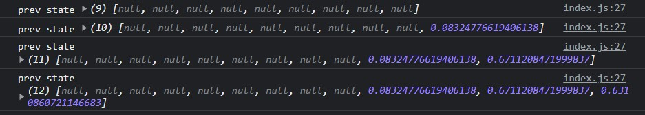

是第一個也是最經典的？
基本用法
1 | function Counter() { |
useState() 的回傳值是一個 Array，第一個值是初始值，第二值是一個 function，當更新 state 時就會透過它來更新。
另外要特別注意，useState()（hook）只能寫在 component 裡面，寫在外面會出錯。
接著在講下面的東西之前，先記住這張圖，等一下會用到：

（Notes 也稍微看一下，它有解釋什麼是 Update 和 Lazy Initializers）
初始值可以傳一個 function：Lazy Initializers
拿 todo list 來舉例，假設我想把初始值設為 localStorage 中的內容，可能會這樣寫：
1 | // 沒值的話會是 null |
這樣子做的結果是 OK 的，不過有一個問題是每次 render 的時候都會再跑一次 window.localStorage.getItem("todos") 這段。
簡單來說，這會造成效能上的浪費，因為 useState 的初始值並不會因為下次 window.localStorage.getItem("todos") 抓到的值改變而重新設定一次初始值，它只有在第一次載入時才會執行一次而已。
所以「如果初始值是需要經過計算的值」，可以直接在 useState 中改傳一個 function，像這樣：
1 | // 傳一個 function 進去 |
這種作法在技術上會稱為「Lazy Initializers」。
總而言之，這樣做以後就不會出現每次 render 又重複執行的問題。（或也可以說是降低 side effect 吧？聽起來比較專業的說法）
當在 function 裡面回傳另一個 function：Cleanup Effects
在用 useEffect 中使用 function 來設定初始值的時候，其實裡面還可以在回傳一個 function，這個 function 會是「Cleanup Effects」階段的 hook：
1 | // 更新 localStorage |
這個 Cleanup Effects hook 會在下一次執行 useEffect 之前先被執行，就跟一開始那張圖裡畫的一樣。而且特別的地方是它能拿到上一個 state 的值，參考下圖：
解說一下這流程：
- 第一次 render 完後執行
useEffect，印出空陣列 - 第二次新增了 todo，改變了 state，重新 render Component
- render 完以後，執行
cleanup effect，這裡的值會是上一個 effect 的 state，所以會印出空陣列 cleanup effect執行完後，接著才執行useEffect，印出新的 todo state（有一個 todo 的內容）
這個 hook 可能會用在你需要清除前一個狀態的時候會用到，例如 webSocket 之類的（先刪除上一筆使用者的連結，才接著建立新的連結）。
或者是希望在 unMount 以前做某些事情，大概會像這樣：
1 | useEffect(() => { |
這個原理是因為傳入空值（dependencies）的useEffect 只有在第一次載入的時候會被執行，要執行第二次的機會只會出現在元件要被 unMount 的時候，這時候才有辦法觸發裡面的 cleanup Effect。
如果新的 state 需要用上一個 state 來算，可以在 setter 傳入 function
如標題所述，這邊我就直接寫個簡短的範例：
1 | const [squares, setSquares] = useState(Array(9).fill(null)) |
初始值是裝了 9 個 null 的空陣列，每當點按鈕時就加一筆亂數到後面去，結果會像這樣子：

一些你可能會犯的錯誤
因為 useState 的 setter 是非同步的，所以寫出一些錯誤的 code。
1. 想取得更新後的值
1 | export default function App() { |
如果你真的想檢查，應該要利用 useEffect：
1 | export default function App() { |
2. 呼叫多次 setter
1 | export default function App() { |
你可能會預期結果變成：
1 | { |
但結果是這樣子：
簡單來說，你在跑第二個 setTestObject 的時候裡面的 ...testObject 還不是更新後的值，代表你是拿最原本的值來用，所以最後才會只有新增了 gender，但其實背後是兩個都有執行到的。
如果要避免這個問題，你可以改用 functional update 的方式來做（就是傳入 function 啦）：
1 | export default function App() { |
這樣就能變成你想要的樣子。
雖然我還不太知道原理是什麼，但總之先這樣做就對了。